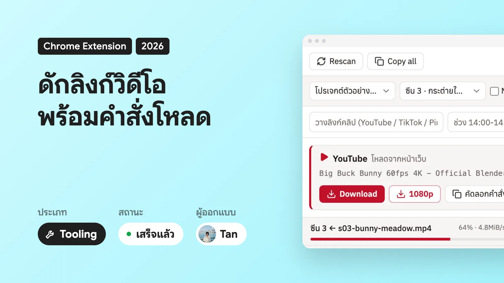
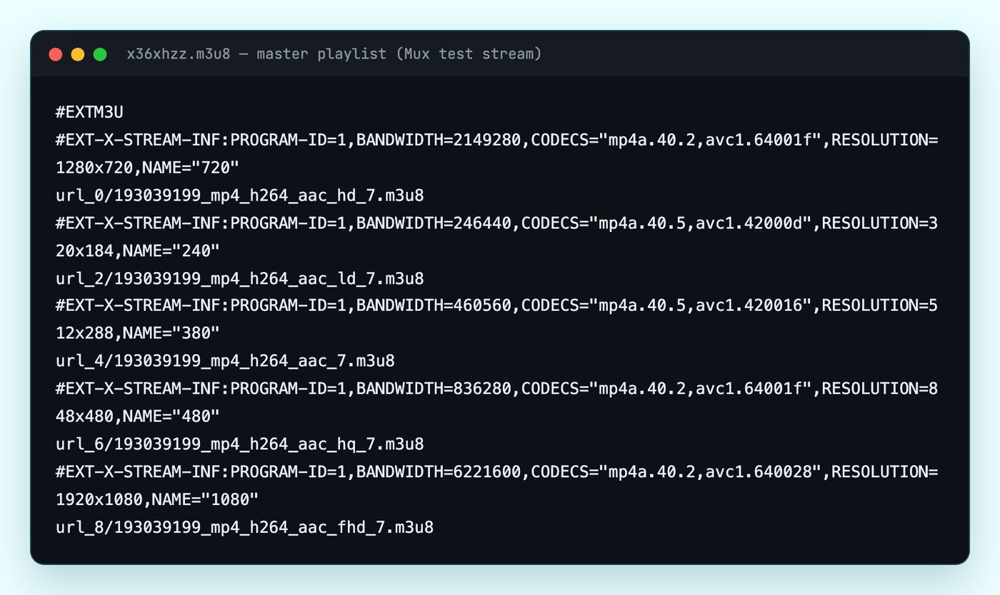
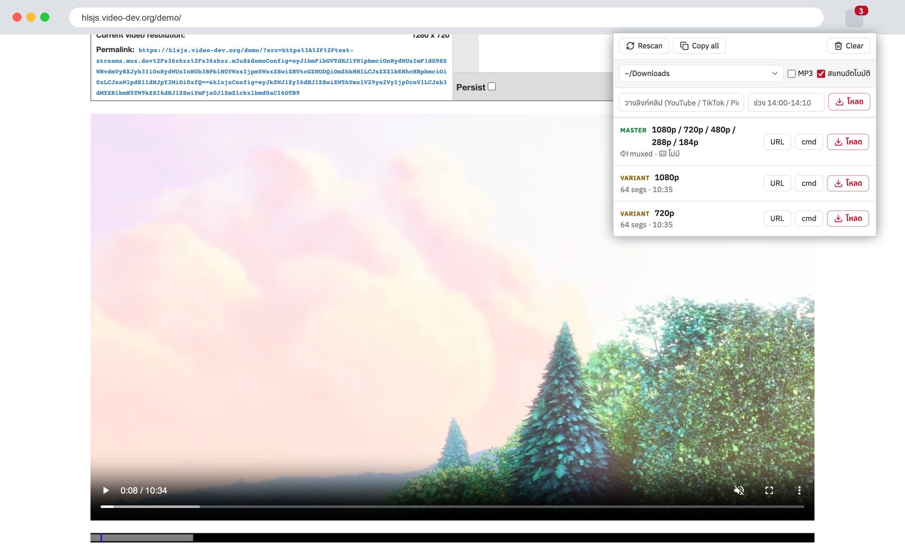
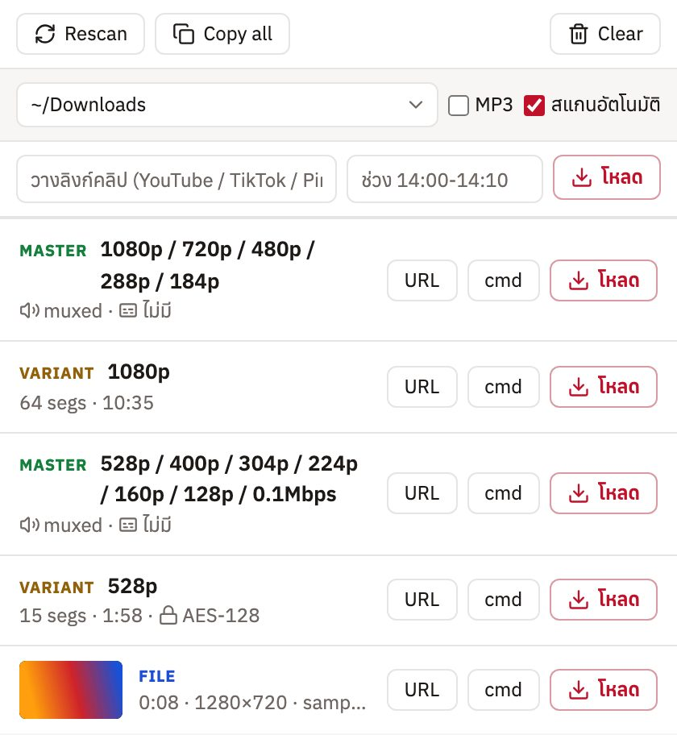
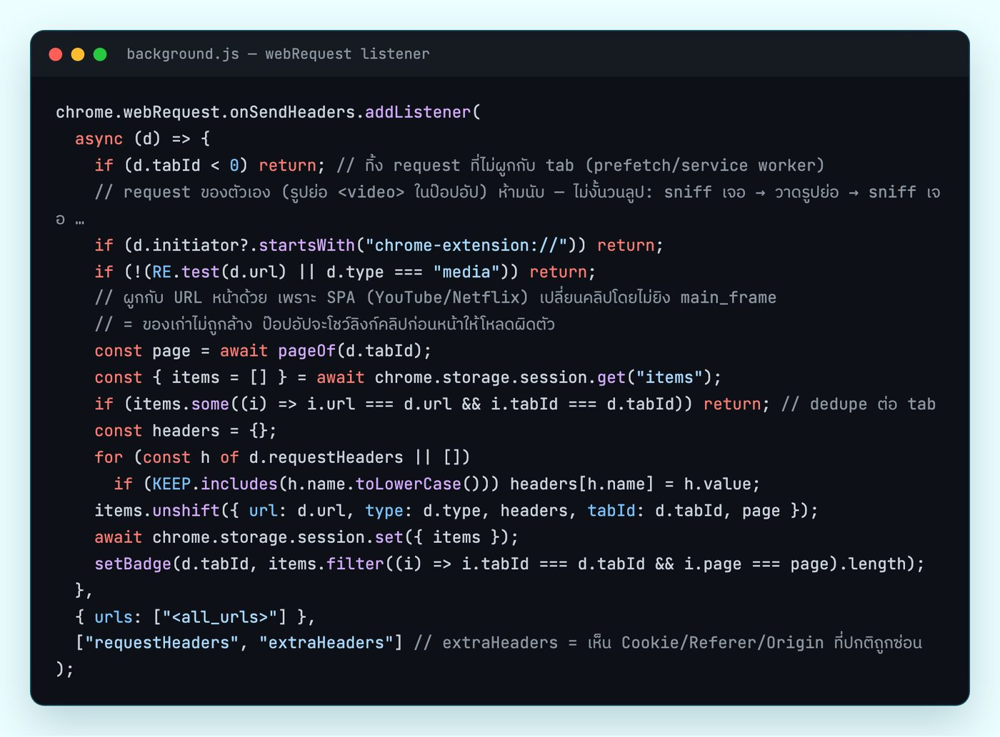
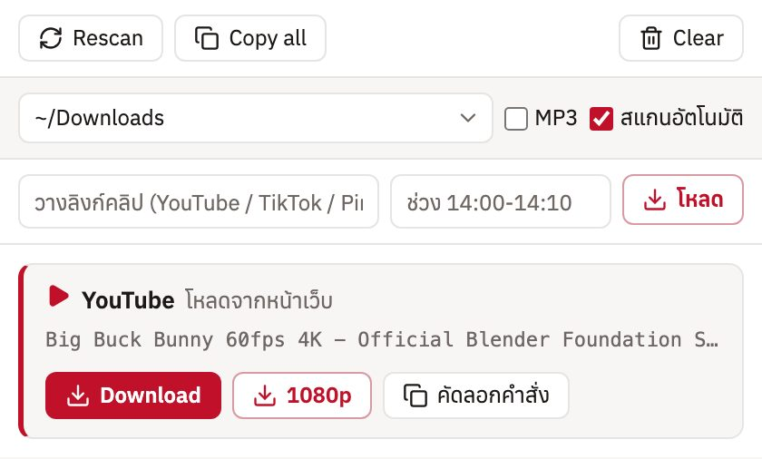
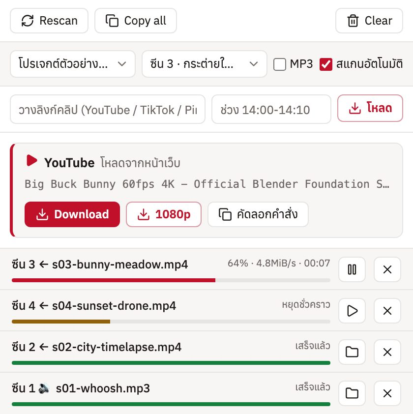
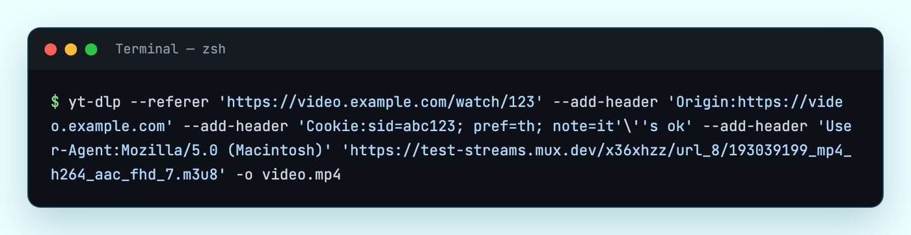
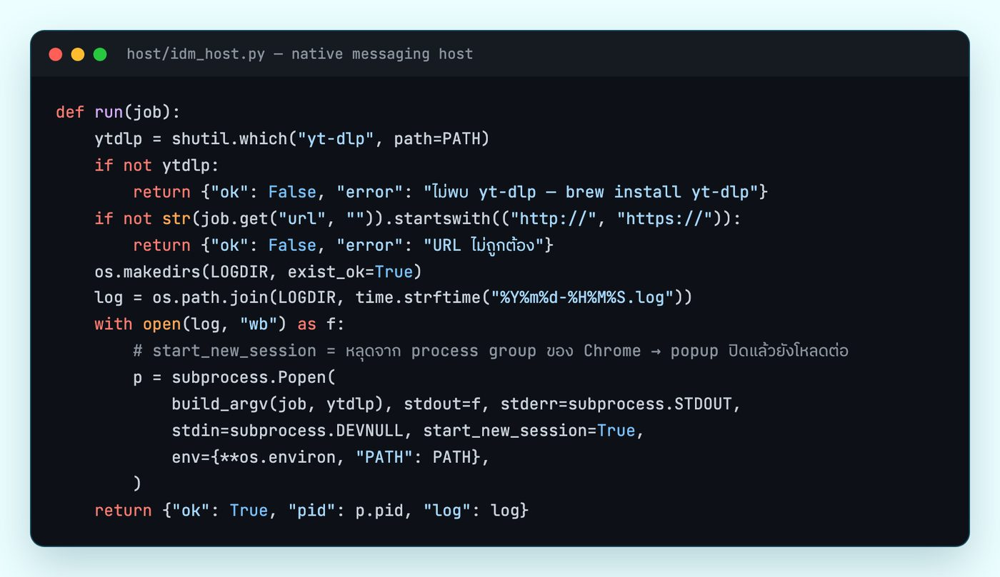
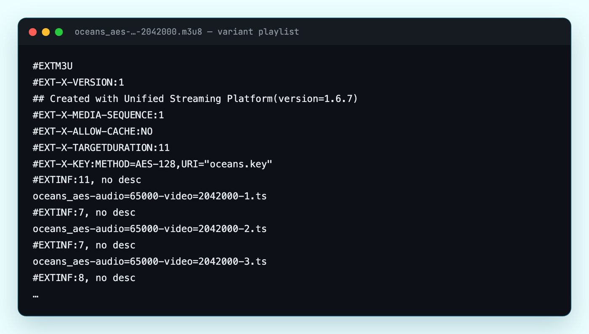

MP4/M3U8 Sniffer
Chrome extension (Manifest V3) ส่วนตัว ที่เปลี่ยนงานน่าเบื่อ — เปิด DevTools ไล่หา m3u8, ก๊อป header เข้า yt-dlp — ให้เหลือแค่คลิกเดียว สร้างด้วย Vanilla JS ล้วน ไม่มี backend ไม่มี build step ข้อมูลไม่ออกนอกเครื่อง

Chrome extension (Manifest V3) ที่ดักทุก media stream ที่หน้าเว็บกำลังเล่น — แยกแยะ HLS master/variant, เก็บ header จริงที่เบราว์เซอร์ส่ง (Referer / Cookie), แล้วประกอบเป็นคำสั่ง yt-dlp ให้ก๊อปวางโหลดได้ทันที
ปัญหาที่เจอ
ทำไมการโหลดวิดีโอที่ตัวเองมีสิทธิ์เข้าถึง มาเก็บดูออฟไลน์ ถึงยากขึ้นทุกปี?

เว็บสมัยนี้ไม่ได้ฝังไฟล์ .mp4 ตรงๆ อีกแล้ว — มันเล่นแบบ HLS ที่หั่นวิดีโอเป็น segment เล็กๆ หลายพันชิ้น (.ts / .m4s) แล้วมี playlist .m3u8 ควบคุม พอจะโหลดมาดูออฟไลน์ ต้องเปิด DevTools → Network ไล่หา m3u8 → ก๊อป Referer/Cookie มาใส่ yt-dlp เอง ทำทุกครั้งเสียเวลามาก และพลาดง่าย
หา media URL ใน DevTools เหนื่อย
Network tab มี request เป็นร้อย — ต้อง filter หา .m3u8/.mp4 เอง แล้วยังแยกไม่ออกว่าอันไหนคือ master playlist (ตัวเลือกความชัด) อันไหนคือ variant จริงที่ต้องโหลด
โหลดตรงๆ แล้ว 403 เพราะขาด header
ก๊อป URL ไปวางใน yt-dlp เฉยๆ มักโดน 403 — เพราะ server เช็ค Referer / Origin / Cookie ที่เบราว์เซอร์ส่งตอนเล่นจริง header พวกนี้ปกติถูกซ่อนใน DevTools
ไม่รู้ว่าสตรีมมีกี่ความชัด / เข้ารหัสไหม
เปิด m3u8 มาอ่านเองต้องรู้จัก tag #EXT-X-STREAM-INF, #EXT-X-KEY — คนทั่วไปดูไม่ออกว่ามี 1080p/720p ให้เลือกไหม หรือ segment ถูกเข้ารหัส AES-128 อยู่
YouTube sniff ตรงๆ ไม่เสถียร
YouTube ส่ง stream ผ่าน googlevideo.com ที่มี token หมดอายุเร็ว + แยก video/audio track — ดักมาแล้วมักโหลดไม่ได้ ต้องใช้วิธีอื่น
ของหน้าเก่าปนหน้าใหม่
เปิดหลายเว็บใน tab ต่างๆ แล้ว media ปนกันมั่ว — ไม่รู้ว่าลิงก์ไหนมาจากหน้าที่กำลังดูอยู่ ต้องมานั่งเดา
วิธีแก้ปัญหา
ให้ extension ทำงานน่าเบื่อทั้งหมดแทน — ดัก, แกะ, ประกอบคำสั่ง เหลือแค่ "ก๊อป → วาง → Enter"

ดัก media อัตโนมัติจาก network layer
Service worker ฟัง webRequest — เจอ request ที่เข้าเงื่อน .m3u8/.mpd/.mp4/.ts/.m4s หรือ type = media ก็เก็บทันที ไม่ต้องเปิด DevTools ไม่ต้อง filter เอง
แกะ m3u8 จริง แล้วบอกว่าโหลดตัวไหน
Fetch ตัว playlist มา parse — master ไหน มีความชัดอะไรบ้าง (1080p/720p), variant ไหนกี่ segment ยาวกี่นาที เข้ารหัส AES-128 หรือเปล่า สรุปเป็นตารางอ่านง่าย
ประกอบคำสั่ง yt-dlp พร้อม header จริง
เก็บ Referer/Origin/Cookie/User-Agent ที่เบราว์เซอร์ส่งจริง แล้วประกอบเป็น yt-dlp --referer ... --add-header ... ที่ shell-quote ปลอดภัย กดปุ่มเดียวก๊อปได้เลย
YouTube = โหลดจากลิงก์หน้าเว็บ
ตรวจว่าอยู่หน้า YouTube watch/shorts/live → เสนอคำสั่ง yt-dlp จาก URL หน้าเว็บโดยตรง (เสถียรกว่า sniff googlevideo มาก) + ตัด &list= กันโหลดทั้ง playlist
แยก media ตาม tab เด็ดขาด
ทุก item ผูกกับ tabId — popup โชว์เฉพาะของหน้าที่ดูอยู่ เปลี่ยนหน้า/ปิด tab = ล้างของเก่าทิ้งอัตโนมัติ badge นับจำนวนต่อ tab
วิธีทำงาน — 4 จังหวะ
ตั้งแต่เปิดหน้าเว็บ จนได้คำสั่งพร้อมโหลด

เปิดหน้าเว็บ
วิดีโอเริ่มเล่น เบราว์เซอร์ยิง request m3u8 / segment ออกไป
Service worker ดัก
จับ URL + เก็บ header จริง ผูกกับ tabId ขึ้น badge นับจำนวน
เปิด popup → แกะ
fetch m3u8 มา parse แยก master/variant + ความชัด + การเข้ารหัส
ก๊อปคำสั่ง
กดปุ่ม yt-dlp → ก๊อปคำสั่งพร้อม header ไปวางใน terminal
Tech Stack & Architecture
Manifest V3 ล้วน — ไม่มี backend, ไม่มี build step, ไม่เก็บข้อมูลออกนอกเครื่อง

Manifest V3 + Service Worker เป็นมาตรฐานใหม่ที่ Chrome บังคับ — event-driven ไม่มี background page ค้าง RAM · chrome.storage.session เก็บใน memory หายเมื่อปิดเบราว์เซอร์ — เหมาะกับข้อมูลชั่วคราวที่ไม่ควรค้างในดิสก์ · host_permissions <all_urls> ให้ popup fetch ตัว m3u8 มาแกะได้โดยข้าม CORS · Vanilla JS ล้วน — ไม่มี build step, โหลด unpacked ได้เลย, ทั้ง extension ~4 ไฟล์
สิ่งที่สร้าง — 8 ความสามารถหลัก
ครบ loop ตั้งแต่ดัก network ถึงคำสั่งพร้อมโหลด

Media Sniffer
ดัก .m3u8/.mpd/.mp4/.ts/.m4s + request type = media จาก webRequest — ครอบคลุมทั้ง HLS, DASH และไฟล์ตรง
Real Header Capture
ใช้ extraHeaders ดึง Referer/Origin/Cookie/User-Agent ที่ปกติถูกซ่อน — กุญแจที่ทำให้โหลดผ่าน 403
HLS Classifier
fetch m3u8 มา parse จริง — แยก master (มี variants + audio/subs) vs variant (segment count + duration + AES)
Quality Resolver
อ่าน RESOLUTION/BANDWIDTH จาก master แล้ว map ให้ variant แต่ละตัวว่าเป็น 1080p/720p
yt-dlp Command Builder
ประกอบคำสั่งพร้อม header + shell-quote ปลอดภัย (จัดการ single-quote/space/semicolon ใน cookie)
YouTube Smart Card
ตรวจหน้า watch/shorts/live → เสนอคำสั่งโหลดจาก URL หน้าเว็บ 2 แบบ (best / 1080p) ตัด playlist param ทิ้ง
Per-Tab Badge & Cleanup
นับจำนวน media ต่อ tab บน icon + ล้างเมื่อ navigate (main_frame) หรือปิด tab — ไม่ให้ของเก่าค้าง
Copy All / Rescan / Clear
ก๊อปทุก URL ทีเดียว, reload tab เพื่อจับรอบสด, ล้างเฉพาะ tab ปัจจุบัน — คุมง่ายจาก header เดียว
หน้าตา Popup
เปิดหน้าเว็บที่มีวิดีโอ → คลิก icon → เห็นทุกอย่างในหน้าจอเดียว

Hack กับปัญหา
6 โจทย์ที่ต้องคิดทางแก้เอง — Chrome extension API quirk + streaming internals

Cookie / Referer ถูกซ่อนจาก webRequest
โดย default onSendHeaders ไม่คืน header ที่ browser จัดการเอง (Cookie, Referer, Origin) — ได้แต่ URL เปล่า โหลดต่อไม่ผ่าน 403
"extraHeaders" ใน extraInfoSpec ของ listener — Chrome จึงเปิดเผย header ที่ถูกซ่อน แล้ว whitelist เก็บเฉพาะ 4 ตัวที่ yt-dlp ต้องใช้ (referer/origin/cookie/user-agent) ไม่เก็บเกินจำเป็นจะแกะ m3u8 ต้อง fetch ข้าม origin
เพื่อรู้ว่า master มีความชัดอะไรบ้าง ต้อง fetch ตัว playlist มาอ่าน — แต่ปกติ fetch ข้าม origin โดน CORS block
host_permissions: <all_urls> ใน manifest — popup context จึง fetch ข้าม origin ได้โดยไม่ติด CORS แล้ว cache ผลลัพธ์ต่อ URL กัน fetch ซ้ำทุกครั้งที่ re-renderMaster ต้องแกะก่อน Variant ถึงรู้ความชัด
ความชัด (1080p) อยู่ในไฟล์ master แต่ตอนดัก network เราเห็น variant URL ลอยๆ ไม่มี label ว่ากี่ p
variantUrl → "1080p" ไว้ใน variantRes ก่อน แล้วค่อยวาดตาราง — ใช้ Promise.all(analyze) แกะทุกตัวให้เสร็จก่อน render รอบเดียว variant จึงหยิบ label จาก master ที่แกะแล้วได้media ของหน้าเก่า carry มาปนหน้าใหม่
SPA / เปลี่ยนหน้าไม่ได้ reload — media เก่ายังค้างใน storage ปนกับหน้าใหม่ ทำให้ popup โชว์ลิงก์ที่ไม่เกี่ยว
onBeforeRequest เฉพาะ main_frame = สัญญาณว่าหน้าเปลี่ยนจริง → ล้าง items ของ tabId นั้นทิ้ง + reset badge บวกกับ cleanup ตอน tabs.onRemoved — storage สะอาดตลอดCookie มี space / semicolon พังคำสั่ง shell
ค่า Cookie จริงมี ; และ space เต็มไปหมด — เอาไปต่อเป็นคำสั่ง shell ตรงๆ มันแตกคำสั่ง หรือถูกตีความผิด
q() ห่อทุกค่าด้วย single-quote แล้ว escape single-quote ข้างในเป็น '\'' — pattern มาตรฐานของ POSIX shell ทำให้ Cookie/Referer ที่มีอักขระพิเศษปลอดภัย 100%YouTube sniff แล้วโหลดไม่ได้
ดัก googlevideo มาได้ URL จริง แต่มี token หมดอายุเร็ว + track เสียงแยกจากภาพ — โหลดจริงแทบไม่เคยสำเร็จ
cleanYt() ตัด &list= กันเผลอโหลดทั้ง playlist — บทเรียน: บางปัญหาแก้ด้วยการ "ไม่ทำ" ดีกว่าฝืนทำให้ได้Design Decision ที่ตั้งใจเลือก
ขอบเขตที่จงใจ "ไม่ทำ" สำคัญพอๆ กับสิ่งที่ทำ

เครื่องมือนี้ทำหน้าที่เดียว: ช่วยประกอบคำสั่งให้เร็วขึ้น — มันไม่ดาวน์โหลดเอง ไม่ถอดรหัส DRM ไม่เก็บข้อมูลออกนอกเครื่อง ตัว classifier แค่ "บอก" ว่า segment เข้ารหัส AES-128 อยู่ (เพื่อให้รู้ว่าต้องมี key) ไม่ได้แตะ key ใดๆ ขอบเขตชัดตั้งแต่ต้น = ตัดสินใจ implement ง่ายและตรงไปตรงมา
ประกอบคำสั่ง ไม่โหลดเอง
ให้ yt-dlp เป็นคนโหลด — extension แค่เตรียม input ให้
Detect ไม่ Decrypt
บอกว่า AES-128 เข้ารหัสอยู่ แต่ไม่ยุ่งกับ key
session storage เท่านั้น
ข้อมูลอยู่ใน memory หายเมื่อปิด ไม่เขียนดิสก์
Whitelist 4 header
เก็บเฉพาะที่ yt-dlp ต้องใช้ ไม่เก็บเกิน
Knowledge Domain ที่แข็งขึ้น
5 พื้นที่ความรู้ที่ระดับเราขยับขึ้นจริงจากการทำโปรเจกต์นี้

เข้าใจ lifecycle ของ service worker (event-driven, ไม่มี persistent background), การใช้ chrome.storage.session vs local, การผูก state กับ tabId, และ badge API — จากศูนย์เป็นเขียน extension ที่ใช้งานจริงได้ทั้งตัว บทเรียน: MV3 บังคับคิดแบบ event-driven ตั้งแต่แรก
รู้จักโครงสร้าง master vs variant playlist, tag #EXT-X-STREAM-INF (RESOLUTION/BANDWIDTH), #EXT-X-MEDIA (audio/subtitle track), #EXTINF (duration ต่อ segment), #EXT-X-KEY (AES-128/SAMPLE-AES) — เขียน parser เองจนแยกประเภทสตรีมได้แม่น บทเรียน: video streaming ไม่ใช่ black box อีกต่อไป
เข้าใจว่า CDN ใช้ Referer/Origin/Cookie ตรวจสิทธิ์อย่างไร ทำไม header บางตัวถูกเบราว์เซอร์ซ่อน และ extraHeaders เปิดเผยมันได้ — ความรู้ที่ต่อยอดไป debug API auth / CORS ได้ทั้งหมด บทเรียน: header คือกุญแจของ web security ครึ่งหนึ่ง
ฝึกเขียน quoting ที่ปลอดภัยจริง ('\'' escape) แทนการต่อ string มั่วๆ — เข้าใจว่า input ที่ไม่ trust (Cookie จากเว็บ) ถ้าเอาไปประกอบคำสั่งต้อง sanitize เสมอ บทเรียน: command injection ป้องกันได้ด้วย quoting ที่ถูก pattern
ตัดสินใจไม่ sniff YouTube, ไม่ decrypt, ไม่ auto-download — ทำให้ตัวเครื่องมือเล็ก เข้าใจง่าย และอยู่ในขอบเขตที่เหมาะสม บทเรียน: ขอบเขตที่คมทำให้ implement ตรง และ maintain ง่ายกว่าเครื่องมือที่พยายามทำทุกอย่าง